Gà Toán: trang phục theo cấp
Mỗi cấp là một bộ đồ, không còn gắn một món đồ lên người gà.
Cũ
 Trưởng thànhcấp 5–9
Mới
Trưởng thànhcấp 5–9
Mới
Gà concấp 1
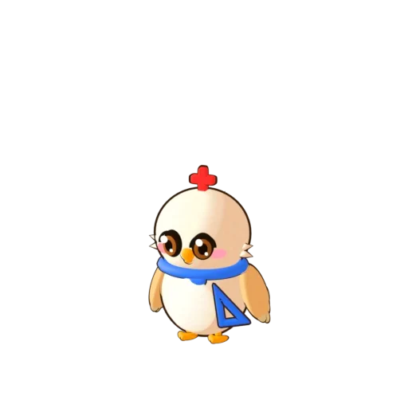
Gà choaicấp 2–4Trưởng thànhcấp 5–9Cao thủ dùng lại hình trưởng thành + vương miện
Cao thủcấp 10+Gà conmũ len, yếm
Gà choaimũ học giả, áo gi-lê, túi
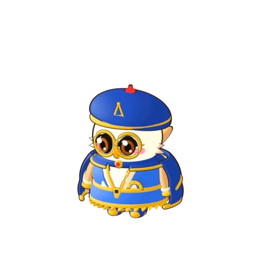
Trưởng thànháo khoác, kính, áo choàng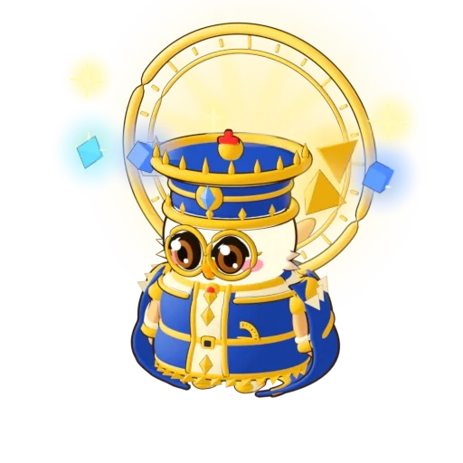
Cao thủmũ lễ, áo dài, hào quangCỡ trên bản đồ
Còn thiếu so với Gunny
- Thân dưới áo vẫn tròn, chưa có tay áo thật.
- Cấp 3–4 hơi nhiều viền vàng.
- Yếm cấp 1 còn nhỏ.
Ý tưởng trang phục cho cả 23 môn
| Gà | Chủ đề | Cao thủ |
|---|---|---|
| Toán | Nhà toán học | Mũ lễ, áo gấm, hào quang thước đo góc |
| Văn | Thi sĩ, thư pháp | Mũ hoa mai, áo dài thêu thơ, chữ mực bay quanh |
| Anh | Người lữ hành | Mũ rộng vành, áo khoác lớn, bong bóng lời nói |
| Lí / Vật lí | Nhà vật lí | Mũ tia sét, áo điện, vòng điện tử |
| Hóa / Hóa học | Nhà hóa học | Mũ bình cầu, áo dài, phân tử bay quanh |
| Sinh | Nhà sinh học | Vương miện lá, áo thêu ADN, lá bay quanh |
| Sử | Sử gia | Mũ giáp có mào, áo hoàng bào, cờ và cổ vật |
| Địa | Nhà thám hiểm | Mũ quả địa cầu, áo dài, lục địa bay quanh |
| Tin / KHMT | Lập trình viên | Mũ trùm {}, áo mạch điện, kí hiệu code |
| Công nghệ | Kĩ sư | Mũ bảo hộ vương miện, bánh răng bay quanh |
| GDCD | Luật | Mũ thẩm phán, áo lễ, cán cân bay quanh |
| Khoa học | Nhà khoa học | Mũ cao, áo dài, nguyên tử và sao |
| Nghệ thuật | Họa sĩ | Mũ nồi lớn, áo cầu vồng, giọt màu bay |
| Kĩ năng | Kĩ năng sống | Mũ cao, áo dài, đồng hồ cát và sao |
| KTMT | Kĩ sư máy tính | Vương miện chip, chip bay quanh |
| HTTT | Hệ thống thông tin | Mũ cao, ổ đĩa và đường nối bay quanh |
| KHDL | Khoa học dữ liệu | Áo thêu đồ thị, biểu đồ bay quanh |
| Kinh tế | Chủ ngân hàng | Áo gấm đồng vàng, đồng xu bay quanh |
| Kế toán | Kế toán | Mũ cao, áo dài, chữ số bay quanh |
| Đại cương | Học giả | Mũ tốt nghiệp vương miện, sách bay quanh |
Học sinh
Đồng phục, khăn quàng, ba lô, giày; tóc và mặt chi tiết hơn.
Cũ
Mới
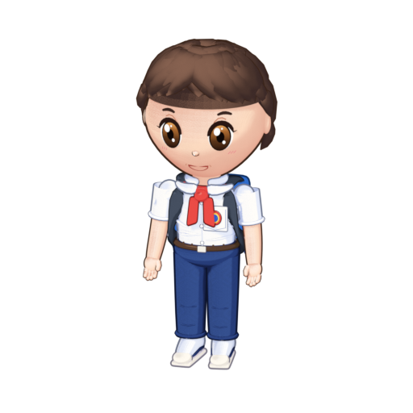
Cũ
Mới
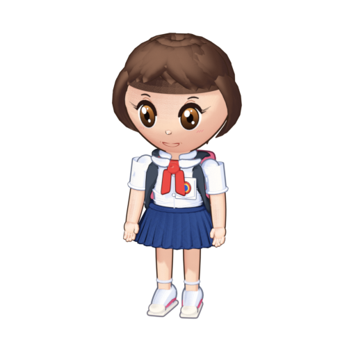
Cỡ trên bản đồ: cũ · mới
Đánh giá thật
- Mới: chi tiết và giống học sinh thật hơn.
- Nhưng dáng còn cứng, bím tóc bạn nữ nhìn trước giống tóc ngắn.
- Ở cỡ bản đồ, mặt nhỏ, kém dễ thương hơn bản cũ đầu to.
Cả 23 gà: trang phục theo cấp
Không còn ô tên: nhìn trang phục là biết môn.
Kiểm tra mù: một agent chưa biết thiết kế đoán môn từ ảnh 128px.
- Cấp 3: vòng 1 đúng 19/25; sửa Toán, Khoa học, GDCD, Văn, Kế toán; vòng 2 đúng 25/25.
- Cấp 1: lần đầu đúng 9/14 (phổ thông); làm biểu tượng to hơn; giờ đúng 25/25.
- Cấp 4: đúng 24/25; sửa Khoa học (bị đoán là Địa lí); giờ đúng hết.
Trường phổ thông
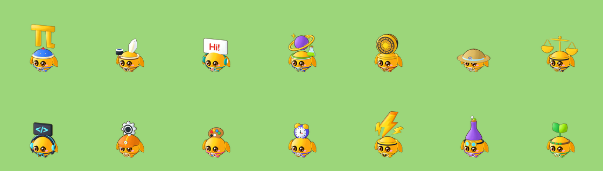
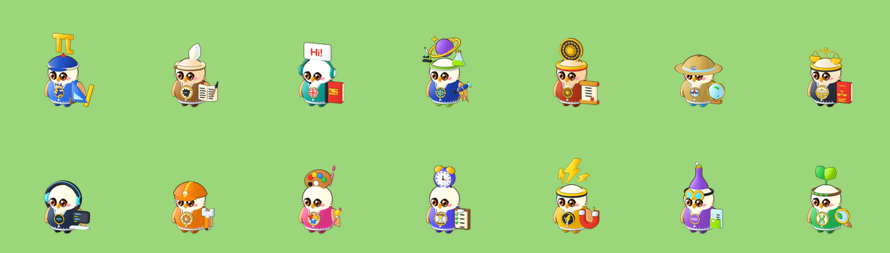
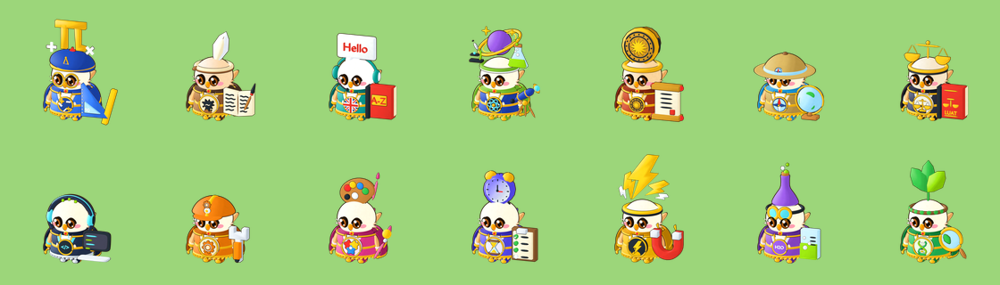
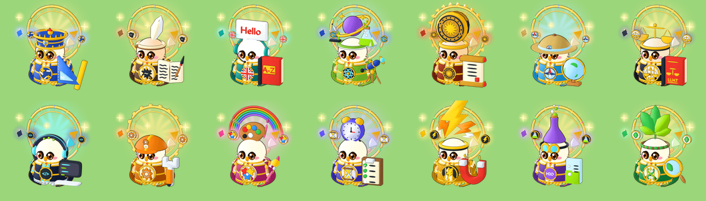
Đại học
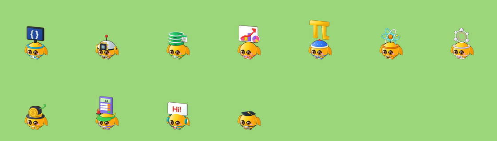
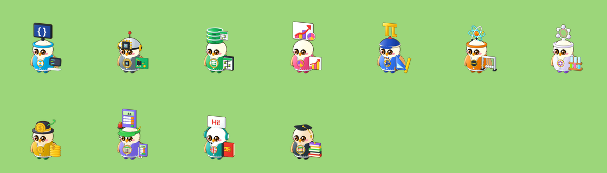
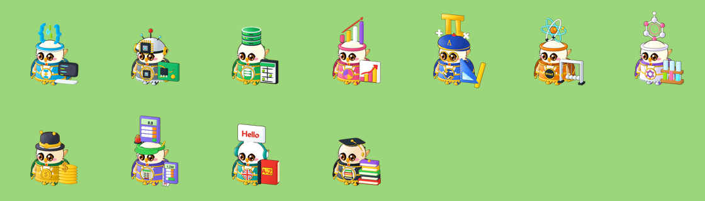
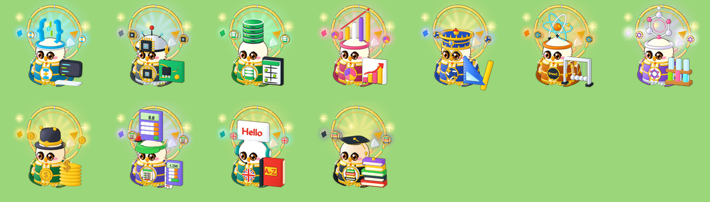
Gà giận (khóa bị bỏ quá 7 ngày)
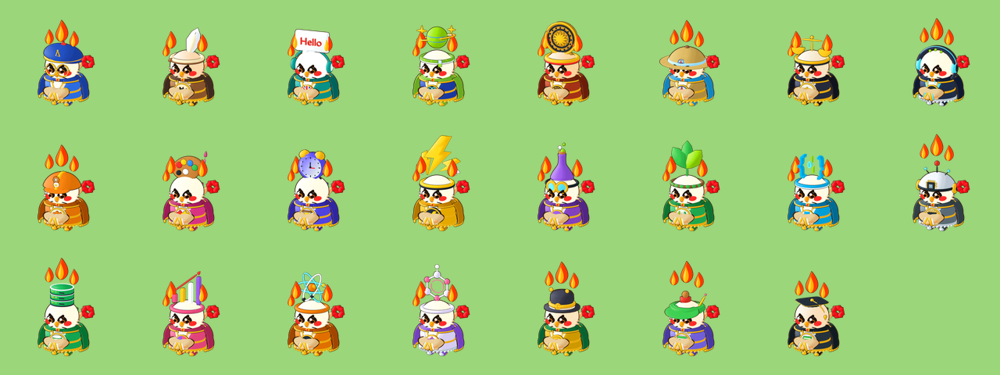
Học sinh 2D vẽ bằng AI (thử 1 bạn)
Nam đại học. Cùng một bạn ở hai góc; trên bản đồ: lật trái phải và nhún.
Đứng
Đi, nghiêng
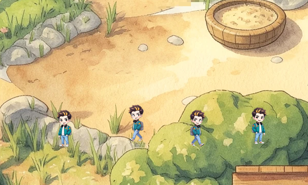
Đánh giá thật
- Ra chất nhân vật game hơn hẳn bản 3D; vẽ lại góc khác vẫn đúng là bạn ấy.
- Nét hơi sạch so với nền màu nước; tay còn đơn giản.
- Trên bản đồ chỉ nhún, chưa cử động chân tay.
Từ ảnh 2D sang 3D (thử miễn phí)
Stable Fast 3D: trước, 3/4, ngang, sau. Dưới: cỡ bản đồ (2D gốc · Stable Fast 3D · TripoSR).
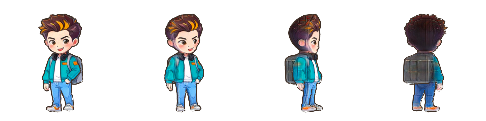
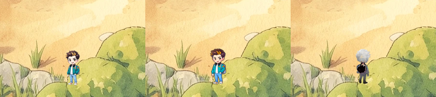
Đánh giá thật
- Stable Fast 3D: mặt trước gần y bản 2D; mặt ngang, sau bị lem, ba lô tự bịa.
- Tay dính vào thân: gắn khung xương sẽ phải sửa nhiều.
- TripoSR: hỏng (đầu trắng, mất mặt).
- Tripo AI (trả phí) chưa thử được: tài khoản 0 tín dụng.
Học sinh kiểu chibi anime, theo cấp học
Tiểu học · THCS · THPT · Đại học. Dựng 3D bằng Blender.
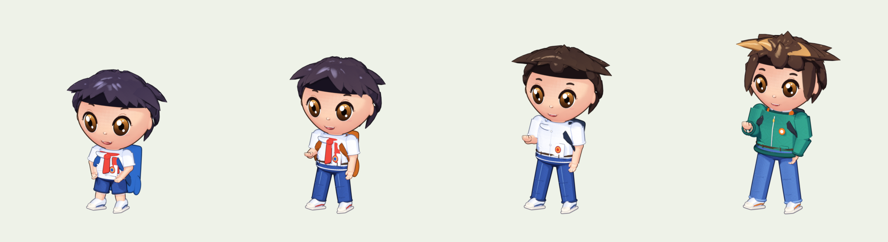
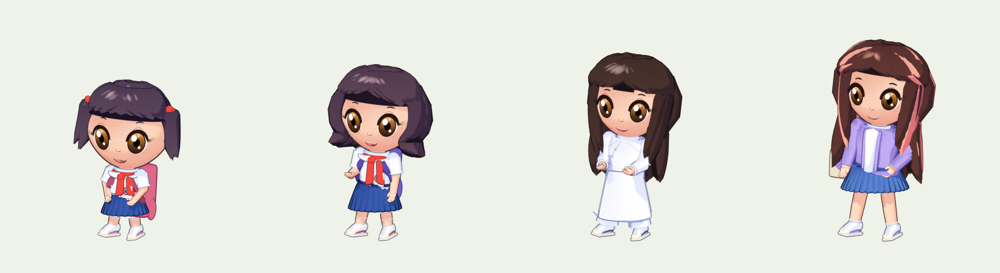
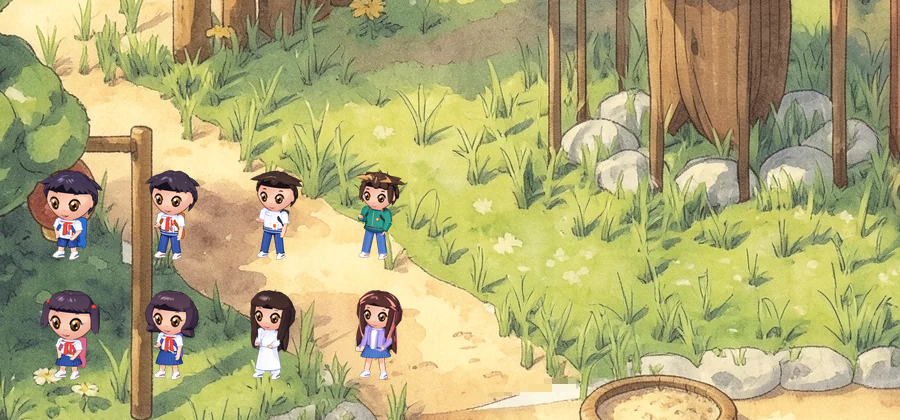
Đánh giá thật
- Đúng trang phục theo cấp, cùng một gương mặt lớn dần.
- Nhưng còn giống búp bê 3D: tóc dính khối, dáng cứng, áo dài chưa rõ tà.
- Chưa ra chất nhân vật vẽ tay như hình mẫu.
Làng gà: vẽ lại gọn một màn hình
Vẽ bằng FLUX (gói trả phí), bảng tên mới không chồng nhau.
Mở Làng gà